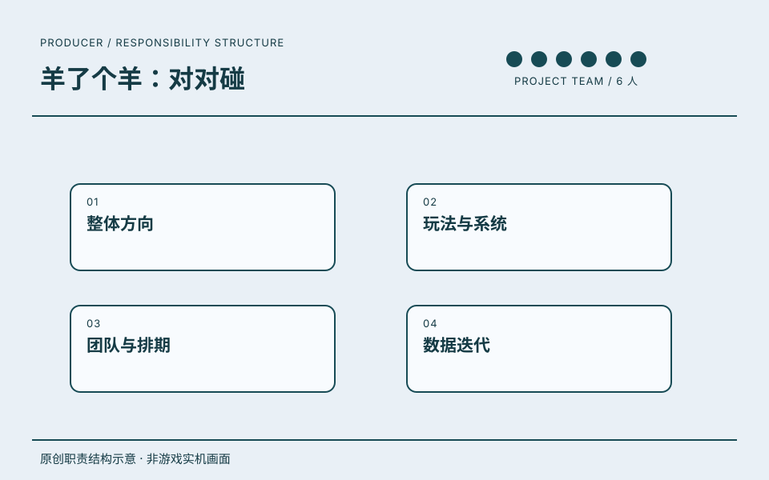
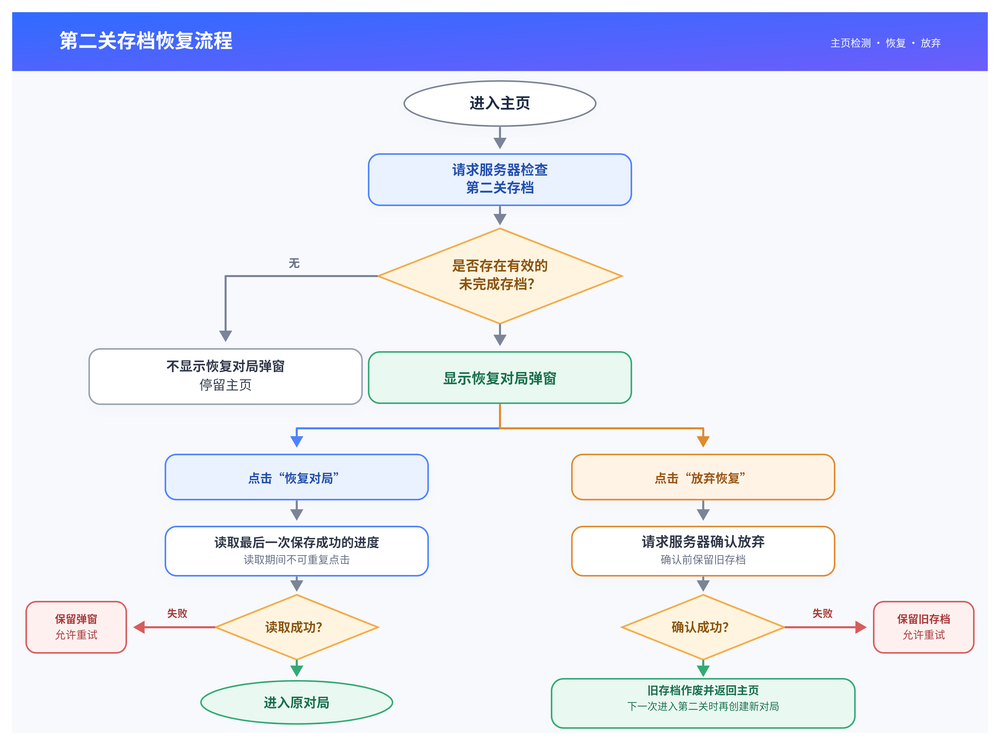
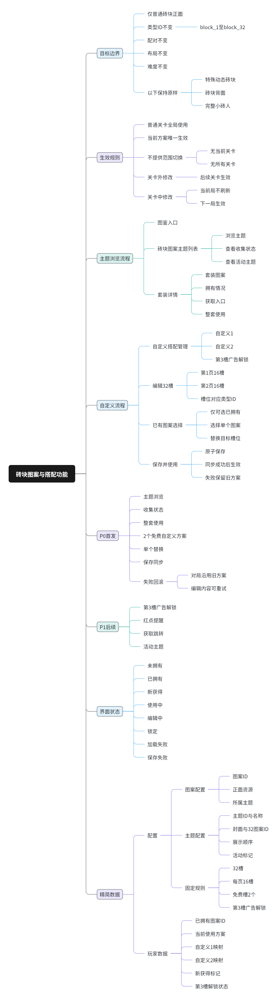
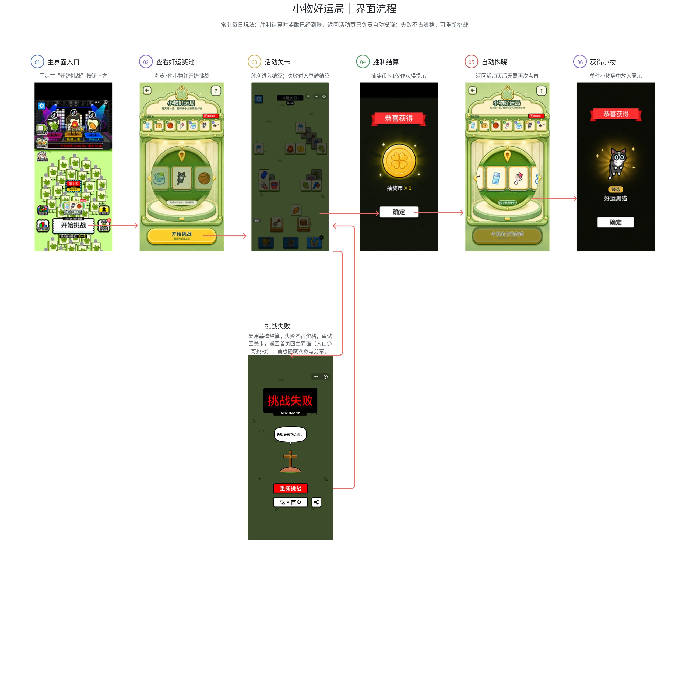
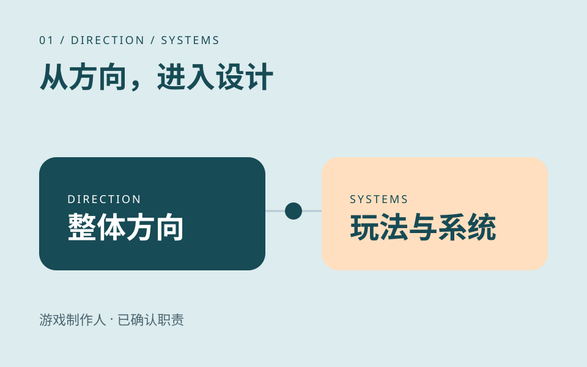

01 / 制作任务档案 · PROJECT 01
羊了个羊：对对碰.
游戏制作人项目团队共 6 人
当前负责的游戏项目。工作范围覆盖整体方向、玩法与系统、团队与排期、数据迭代。
职责沿用该段公司经历的记录；共同职责不逐项归为单个项目的独立成果。

原创职责结构示意 · 非游戏实机画面ROLE / 我的角色游戏制作人
在一个共 6 人的项目团队中，负责游戏方向、玩法系统与推进节奏。
项目团队共 6 人，不等同于 6 名直接下属。职责不包含美术表现、发行运营。
SCOPE / 工作范围工作职责
- 01整体方向
- 02玩法与系统
- 03团队与排期
- 04数据迭代
RECORD / 可追溯记录项目记录
《羊了个羊：对对碰》列于这段任职经历中。
- 任职公司
- 北京简游科技有限公司
- 角色
- 游戏制作人
- 时间
- 2026.07.27—至今
任职、角色与职责依据本人履历及确认。图示是本站原创的职责结构表达。
PROJECT DESIGN / 项目设计资料
项目设计资料.
三份项目资料，
阅读状态、系统与操作流程。
我的角色是游戏制作人，工作范围包括整体方向、玩法与系统、团队与排期、数据迭代。下列资料用于展开项目设计讨论；美术执行由团队相应岗位承担。

项目设计资料 · 状态与异常分支
01 / STATE / RECOVERY第二关存档恢复
一条恢复路径，需要同时处理成功、放弃和失败。
- 主页先检测有效存档，再决定是否展示继续对局弹窗。
- 恢复读取最近一次成功保存的进度；失败时保留存档，允许重试。
- 放弃需要服务端确认成功后，才作废旧存档。
查看原图（可缩放）↗
在页面内阅读大图＋
大图可横向与纵向滚动。键盘进入图区后可用方向键移动；手机可滑动，或打开原图缩放。

项目设计资料 · 系统规则脑图
02 / SYSTEM / RULES砖块图案搭配
个性化外观的同时，明确哪些规则保持稳定。
- 仅调整普通砖块正面图案，类型、配对、布局与难度规则保持不变。
- 区分主题浏览、整套使用与自定义搭配，并规定方案的生效时机。
- 保存成功后生效；失败保留旧方案。图中 P0、P1 表示设计范围分层。
查看原图（可缩放）↗
在页面内阅读大图＋
大图可横向与纵向滚动。键盘进入图区后可用方向键移动；手机可滑动，或打开原图缩放。

项目设计资料 · 界面流程示意
03 / PLAYER / FLOW小物好运局流程
把入口、挑战、结算和奖励反馈连成一条可读的路径。
- 从主界面入口进入奖池，再开始活动关卡。
- 胜利后结算奖励，返回活动页自动揭晓小物。
- 失败不占资格，可重新挑战；失败回路与成功路径分开标出。
查看原图（可缩放）↗
在页面内阅读大图＋
大图可横向与纵向滚动。键盘进入图区后可用方向键移动；手机可滑动，或打开原图缩放。
资料类型：项目设计图。图中展示设计方案，不代表全部已上线，也不构成经营成果证明；资料不用于认定个人独立完成范围。
PROJECT NOTES / 公开职责摘要
我的工作范围.
围绕已确认的职责整理。
每篇都有图示与独立阅读页面。

原创职责图示 · 非游戏实机画面
01 / DIRECTION / SYSTEMS玩法与系统
负责整体方向、玩法与系统。把制作人的工作位置和设计关注点放在一起阅读。
阅读公开摘要 ↗
 原创职责图示 · 非游戏实机画面
原创职责图示 · 非游戏实机画面
02 / TEAM / SCHEDULE团队与排期
项目团队共 6 人，工作范围包含团队与排期。团队背景与个人职责分开说明。
阅读公开摘要 ↗
 原创职责图示 · 非游戏实机画面
原创职责图示 · 非游戏实机画面
03 / DATA / ITERATION数据迭代
数据迭代属于已确认的工作范围。阅读时区分职责记录与可核验的结果。
阅读公开摘要 ↗